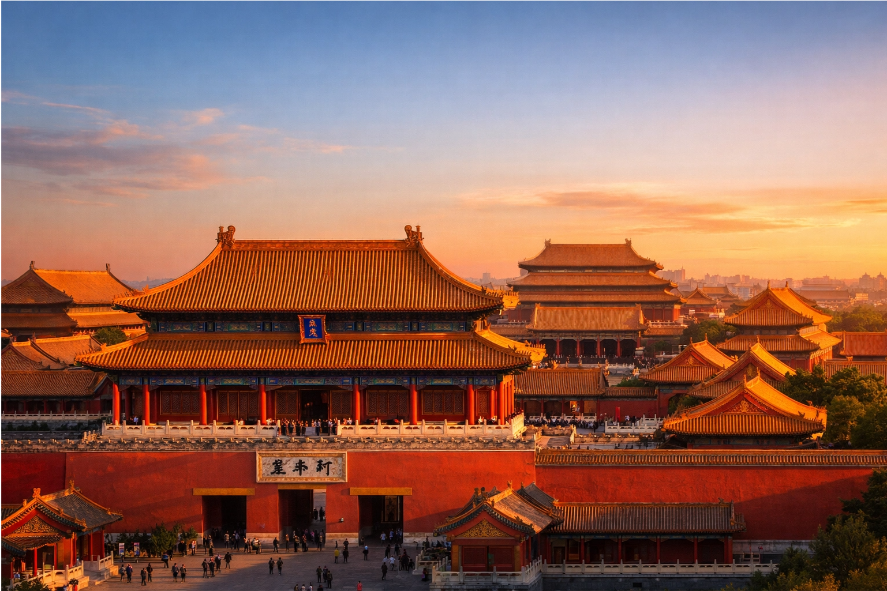
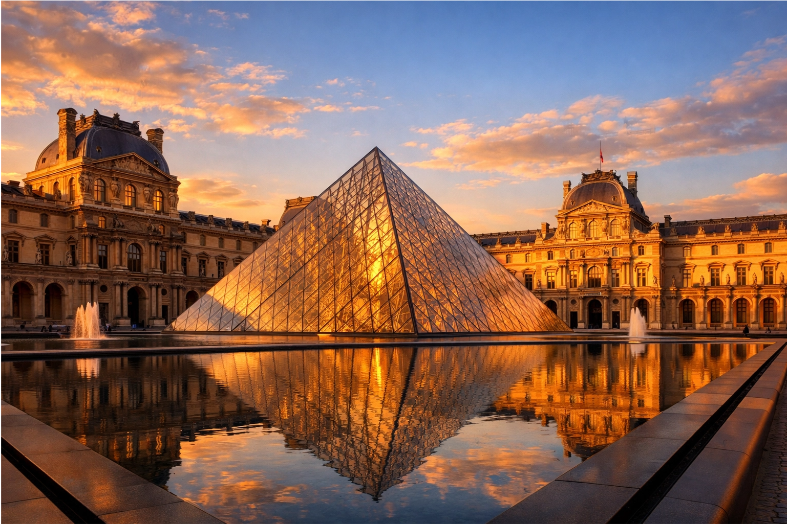
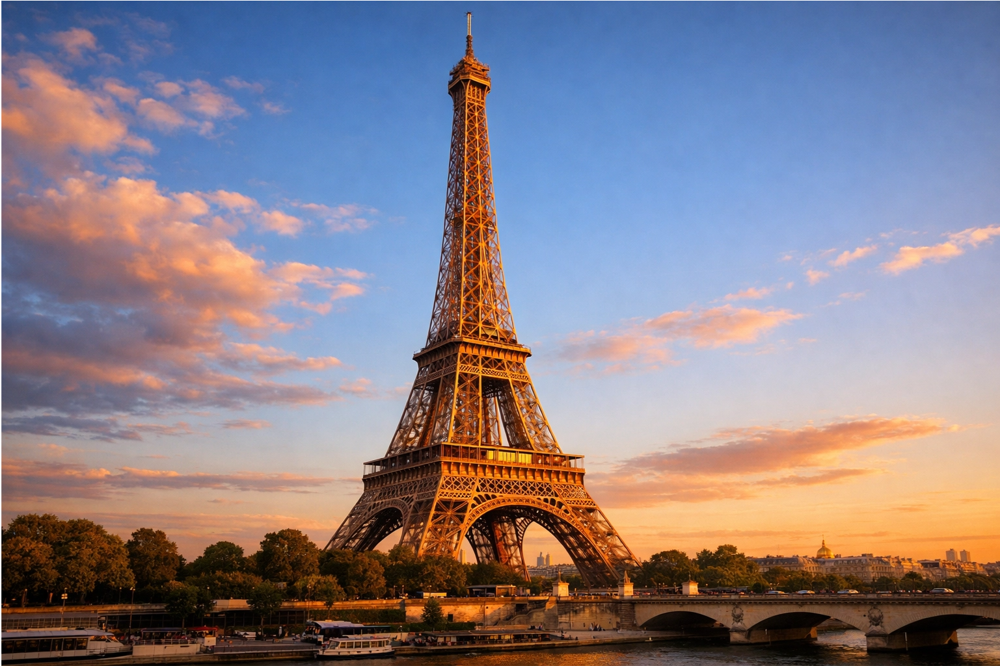
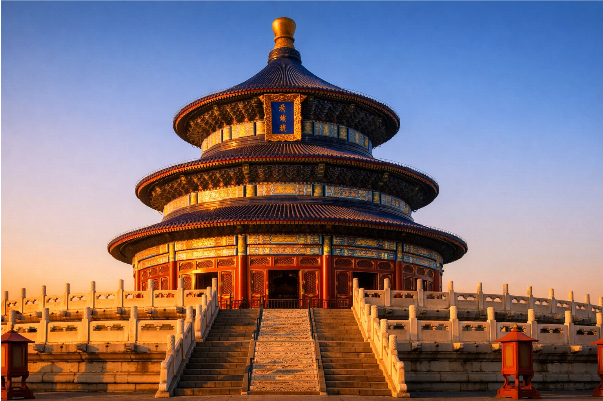
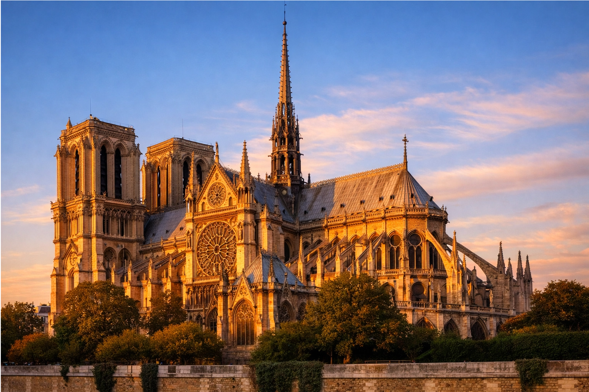

Ancient Majesty Meets Timeless Romance
Where imperial grandeur encounters elegant sophistication — exploring the timeless dialogue between Eastern heritage and Western charm
Beijing, China's millennium-old political and cultural heart, boasts majestic landmarks like the Forbidden City, the Temple of Heaven, and the Great Wall — symbols of imperial power, harmony with nature, and enduring strength.
Paris, the eternal City of Light, enchants with the Louvre, Notre-Dame Cathedral, and the Eiffel Tower — icons of art, romance, and revolutionary spirit.
One represents the weight of history and Eastern philosophy; the other embodies poetic living and Western elegance. When these two worlds meet, a beautiful cultural conversation unfolds.

The world's largest and most complete ancient palace complex, symbol of imperial authority and order.

Home to the Mona Lisa and countless masterpieces — the world's most visited museum.
A monumental ancient defense system and UNESCO World Heritage site — engineering marvel of resilience.

Icon of modern engineering and romance — the sparkling symbol of Paris.

Where emperors prayed for bountiful harvests — embodiment of harmony between heaven and earth.

Masterpiece of Gothic architecture — a timeless symbol of faith and artistry.
From the intricate brushwork of imperial paintings to the impressionist strokes of French masters — mutual inspiration across centuries.
Peking duck meets foie gras and macarons — a delightful East-West fusion on the plate.
Qipao elegance inspires haute couture, blending ancient silhouettes with modern Parisian flair.